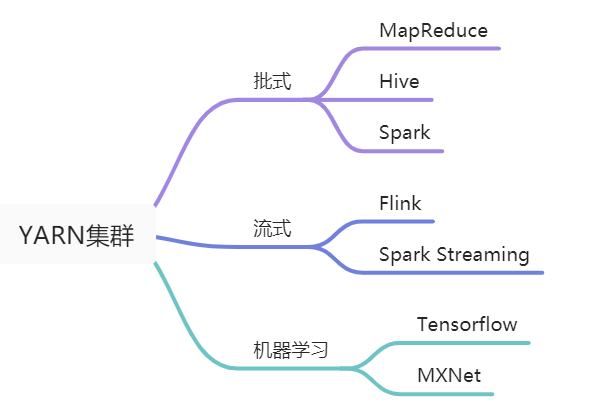
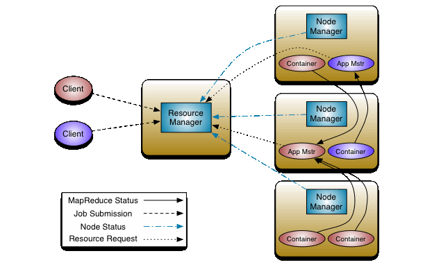
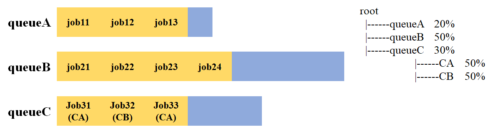
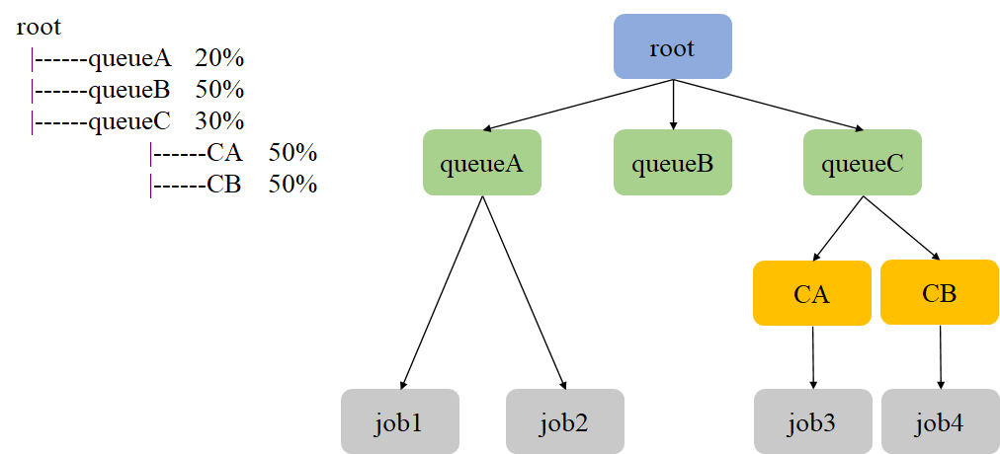

YARN(Yet Another Resource Negotiator)是一个分布式的资源调度和管理系统, 负责管理和分配集群的资源(目前主要是vcores和memory), 在一些资料中形象地把YARN比作一个分布式的操作系统. YARN在Hadoop 2.x中引入, 目前已经有批式, 流式, 机器学习等多种类型的计算框架支持在YARN上运行, 如Spark, Flink, Tensorflow等框架都对YARN有成熟的支持. YARN已经成为名副其实的”数据操作系统”.

本文是Hadoop YARN原理系列文章的第一篇, 主要讲述YARN的整体架构, 为后文讲述如何编写YARN application打下基础. Hadoop YARN系列文章是对YARN原理以及如何编写YARN application的总结, 主要目的是为进一步探索Flink等计算框架on YARN Runtime层打下基础, 并非想要深入并完整地介绍YARN的所有内容, 不过文中也给出了一些进阶资料, 供有需要的读者阅读.
YARN架构
YARN采用了经典的Master-Slave架构, 其中ResourceManager对应Master, NodeManager对用Slave. YARN集群的组成部分如下图所示(图片来自Hadoop官方文档).

YARN集群中包含ResourceManager, ApplicationMaster和NodeManager三个主要组件:
- ResourceManager是一个全局组件, 一个YARN集群中只存在一个ResourceManager, 它持有整个系统的资源情况, 其主要作用是:
a. 接收并处理来自Client的请求;
b. 监控NodeManager;
c. 启动并监控ApplicationMaster;
d. 资源分配调度. - ApplicationMaster与YARN application对应, 每个application都会有一个ApplicationMaster, ApplicationsMaster也运行在Container中. 需要说明的是, ApplicationMaster其实并不是YARN集群的常驻进程, 只有在YARN集群中存在正在运行的application时, 才会存在ApplicationMaster, 严格来说它并不是YARN集群的组件, 而是属于每个YARN application生命周期中的一个组件. 其主要作用是:
a. 为application申请资源, 并分配给内部各个任务;
b. 监控application并提供容错. - NodeManager用于管理单个节点上的资源, 每个工作节点上都会存在一个NodeManager, 它会向ResourceManager报告其掌握的资源情况, 其主要作用是:
a. 管理单个结点上的资源;
b. 处理来自ResourceManager的请求;
c. 处理来自ApplicationMaster的请求.
这里的YARN application是指运行在YARN中的一个具体的程序, 也有地方叫做Job(作业), 但是在Hadoop官方文档中叫做YARN application, 所以这里沿用了这种叫法. 实际上只要不产生歧义这两种叫法都是可以的.
具体来说, ResourceManager包含两个主要的内部组件Scheduler和ApplicationsManager.
- Scheduler负责为运行的YARN application分配资源, 它持有集群资源和调度队列信息. Scheduler是一个单纯的调度器, 不负责监控application的运行情况以及容错保证, 这部分功能由ApplicationManager提供. Scheduler框架提供了可扩展的接口, Hadoop目前支持CapacityScheduler和FairScheduler, 具体在YARN Scheduler章节说明.
- ApplicationManager负责接收Client的Job提交, 并启动第一个Container用于运行ApplicationMaster, 同时提供容错服务. 接下来由ApplicationMaster从Scheduler调度合适的资源, 并监控作业运行状态.
在一些资料中, 把Container也归为YARN集群的组件, 严格来说是不准确的. Container是YARN集群资源调度的单位, 它封装了某个节点上多个维度的资源(vcores, memory). 提交给YARN集群的Job最终都会分配到具体的一个或多个Container中运行. 但是Container并不是预先分配好的, 而是根据提交给YARN集群的Job所需资源动态分配的, 一旦Job运行结束, 其对应的Container就会销毁.
YARN核心参数
上一节从概念上讲述了YARN集群的组成部分及其作用, 相对来说比较抽象. 这一节讲述YARN集群的一些核心配置参数, 通过这些参数可以进一步了解上述组件在YARN集群中的物理存在形式. 这些参数名和默认值都可以在yarn-default.xml文件中找到. 在集群中可以在$HADOOP_HOME/etc/hadoop/yarn-site.xml文件中配置这些参数.
| 组件 | 参数 | 默认值 | 作用 |
|---|---|---|---|
| ResourceManager | yarn.resourcemanager. scheduler.class |
org.apache.hadoop. yarn.server. resourcemanager. scheduler.capacity. CapacityScheduler |
指定资源调度器类, 默认是容量调度器. 可配置为org.apache.hadoop.yarn. server.resourcemanager. scheduler.fair.FairScheduler以启用公平调度器 |
| yarn.resourcemanager. scheduler.client.thread-count |
50 | Scheduler用于Job调度的线程数 | |
| NodeManager | yarn.nodemanager. resource.detect-hardware-capabilities |
false | 启用自动检测硬件配置, 例如内存和CPU. |
| yarn.nodemanager. resource.memory-mb |
-1 | NodeManager可使用的物理内存, 若设置为-1且yarn.nodemanager. resource.detect-hardware-capabilities为true, 则会自动计算, 否则为8192MB |
|
| yarn.nodemanager. resource.cpu-vcores |
-1 | NodeManager可使用的CPU核数, 若设置为-1且yarn.nodemanager. resource.detect-hardware-capabilities为true, 则会自动计算, 否则为8 |
|
| Container | yarn.scheduler. minimum-allocation-mb |
1024 | Container最小内存 |
| yarn.scheduler. maximum-allocation-mb |
8192 | Container最大内存 | |
| yarn.scheduler. minimum-allocation-vcores |
1 | Container最小CPU核数 | |
| yarn.scheduler. maximum-allocation-vcores |
4 | Container最大CPU核数 |
YARN Scheduler
YARN Scheduler是决定YARN集群扩展性的重要因素, 很多公司内部为了实现更高效的调度和集群资源使用率, 都对YARN的调度策略做了定制化的更改, 详细的内容可阅读参考[4-5].
目前YARN提供了FifoScheduler, CapacityScheduler以及FairScheduler三种类型的Sceduler, 并且Hadoop 3.0研发了Global Scheduling颠覆了现有的Scheduler框架, 期望进一步提升单集群调度性能. 目前, CapacityScheduler和FairScheduler在生产环境中都有使用, 这里主要介绍这两种Scheduler, FifoScheduler一般不会在生产环境中使用.
CapacityScheduler
CapacityScheduler是一种容量调度器, 它使YARN集群可以以友好的形式提供可共享的, 多租户的对外服务. 同时可以最大化集群吞吐量和使用效率.

CapacityScheduler有以下几个重要特征:
- 层次队列: 支持配置多个具有层级结构的队列(如上图所示), 每个队列可配置一定量的资源. 如果某个队列有资源剩余, 可以共享资源给资源紧缺的队列, 一旦该队列有新的application提交, 其他队列会归还借调资源.
- 容量保证: 管理员可以为每个队列配置最低资源和资源使用上限.
- 多租户: 可通过配置层次化队列实现多租户(每个用户对应一个叶子节点队列), 以防止单个application, 用户或队列垄断队列或集群的资源, 以确保集群不会过载.
- 优先级调度: 允许application以不同的优先级提交. 整数值越高, 应用的优先级越高. 目前应用优先级仅支持先进先出排序策略.
当队列中存在待调度的Job, 并且队列有空闲资源时, CapacityScheduler会为Job进行资源调度. 其过程如下:
- 选择队列: 从根队列开始, 对子队列按资源使用率从小到大排序. 若子队列为叶子队列, 则依次按照步骤2和步骤3在队列中选出一个Container; 否则以该子队列为根队列, 重复以上过程, 直到找到一个合适的队列并退出.
- 选择Job: 在步骤1选中一个叶子队列后, CapacityScheduler按照Job优先级和提交时间对子队列中的Job进行排序, 选择优先级最高(优先级最高的情况下选择最先提交的)的Job资源分配.
- 选择Container: 同一个Job请求的Container可能涉及不同的优先级, 节点, 资源量和数量. 当选中一个Job后, CapacityScheduler将尝试优先分配优先级高的Container. 同一类优先级, 优先选择满足本地性的Container, 依次选择node local, rack local和no local.
队列资源使用率 = 已经使用的资源量 / 除以最小队列资源容量.
对于非叶子队列, 它的已使用资源量是各个子队列已使用资源量之和.
CapacityScheduler有两种资源比较器用以比较两个资源的大小(比如比较用户当前使用的资源量是否超过了设置的上限资源量), 默认的DefaultResourceCalculator只考虑了内存资源. DominantResourceCalculator采用了DRF(Dominant Resource Fairness)比较算法, 同时考虑内存和CPU两种资源, 可通过参数yarn.scheduler.capacity.resource-calculator设置资源比较器.
下面以一个具体案例说明CapacityScheduler如何进行调度.

假设现在集群中存在4个job, 其所属队列情况如上图所示. CapacityScheduler的调度过程如下:
- 从root队列开始, 选择一个资源使用率最低的子队列queueA(这里假设queueA资源使用率最低).
- 在queueA中, 对其中的job按提交时间和优先级排序, 选择job1进行资源分配.
关于CapacityScheduler在集群中的详细配置, 可阅读参考[3].
FairScheduler
FairScheduler是一种公平调度器, 它和CapacityScheduler一样支持层次队列, 多租户以及优先级调度. 它的资源分配流程与CapacityScheduler一样, 包含选择队列, 选择Job和选择Container三个步骤. 当然两者之间也存在一些区别.
| CapacityScheduler | FairScheduler | |
|---|---|---|
| 调度策略 | 优先选用资源使用率低的队列 | 优先选择资源缺额比例大的队列 |
| 资源分配方式 | FIFO | FIFO, Fair, DRF |
FairScheduler在选择队列时的调度策略是优先选择资源缺额比例大的队列. 资源缺额比例计算方式如下:
$$ 缺额比例 = \frac{队列中Job实际所需资源-队列最大资源}{队列最大资源} $$
在每个队列中进行Job资源分配时, CapacityScheduler只支持FIFO, FairScheduler支持FIFO, Fair和DRF. 若配置为FIFO则FairScheduler退化为CapacityScheduler. FairScheduler的默认分配方式是Fair, 它采用的是最大最小公平算法, 支持加权, 且仅考虑内存资源. 下面以一个具体案例说明基于最大最小公平算法的Fair分配方式.
| 不加权 | 加权 | |
|---|---|---|
| 某队列供12个资源, 存在4个Job, 资源需求分别是: Job1: 1, Job2: 2, Job 3: 6, Job4: 5. | 某队列供16个资源, 存在4个Job, 资源需求分别是: Job1: 4, Job2: 2, Job 3: 10, Job4: 4. 每个Job的权重是: Job1: 5, Job2: 8, Job3: 1, Job4: 2. | |
| 第1次分配 | 12 / 4 = 3 Job1: 分3 - 多2 Job2: 分3 - 多1 Job3: 分3 - 少3 Job4: 分3 - 少2 |
16 / (5 + 8 + 1 + 2) = 1 Job1: 分5 - 多1 Job2: 分8 - 多6 Job3: 分1 - 少9 Job4: 分2 - 少2 |
| 第2次分配 | 3 / 2 = 1.5 Job1: 分1 Job2: 分2 Job3: 分3 + 分1.5 - 少1.5 Job4: 分3 + 分1.5 - 少0.5 |
7 / (1 + 2) = 2.33 Job1: 分4 Job2: 分2 Job3: 分1 + 分2.33 - 少6.67 Job4: 分2 + 分4.66 - 多2.66 |
| 第3次分配 | Job1: 分4 Job2: 分2 Job3: 分1 + 分2.33 + 分2.66 Job4: 分4 |
在最大最小公平算法中, 会一直分配直到队列中没有空闲资源或所有Job都获得所需资源.
基于Fair策略的资源分配只考虑了内存, 在一些场景下, 需要考虑多个维度资源的公平分配, 比如CPU, 内存等. FairSceduler支持DRF分配策略, 可以考虑同时考虑CPU和内存两个维度. 关于DRF算法可参考论文Dominant Resource Fairness: Fair Allocation of Multiple Resource Types.
关于FairScheduler在集群中的详细配置, 可阅读参考[4].
小结
本文首先从整体出发, 从概念上剖析了YARN集群的架构和各个组成部分. 为了从物理上进一步了解各个组件, 形成具象化的概念, 又给出了几个核心参数. 最后讲述了YARN中已经实现了两种Scheduler, 由于Schduler是决定集群扩展性的重要因素, 因此很多公司在内部对Scheduler进行了不同程度的优化.
随着Kubernetes等容器化部署技术的不断发展, 未来Kubernetes或许会成为大数据计算框架和机器学习框架的标配, YARN或许会成为历史. 但是由于YARN框架在大数据计算领域的成熟应用以及前期的广泛部署, 学习基本的YARN原理仍是我们进一步学习相关框架runtime层的重要基础.
参考
[1] Apache Hadoop YARN
[2] Understanding YARN architecture and features
[3] Hadoop: Capacity Scheduler
[4] Hadoop: Fair Scheduler
[5] Hadoop YARN：调度性能优化实践
[6] Uber 是如何低成本构建开源大数据平台的？
[7] Untangling Apache Hadoop YARN, Part 1: Cluster and YARN Basics
[8] Untangling Apache Hadoop YARN, Part 2: Global Configuration Basics
[9] Untangling Apache Hadoop YARN, Part 3: Scheduler Concepts
[10] Untangling Apache Hadoop YARN, Part 4: Fair Scheduler Queue Basics
[11] Untangling Apache Hadoop YARN, Part 5: Using FairScheduler queue properties
本博客所有文章除特别声明外, 均采用CC BY-NC-SA 3.0 CN许可协议. 转载请注明出处!
关注笔者微信公众号获得最新文章推送